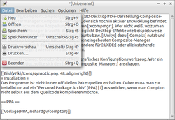

Compton
Dieser Artikel wurde für die folgenden Ubuntu-Versionen getestet:
Ubuntu 16.04 Xenial Xerus
Ubuntu 14.04 Trusty Tahr
Zum Verständnis dieses Artikels sind folgende Seiten hilfreich:
 Compton
Compton  , eine Abspaltung (ein Fork) von xcompmgr, ist ein Composite-Manager, der mit sehr geringem Ressourcen-Bedarf Desktop-Effekte wie beispielsweise Transparenz und Schattenwurf ermöglicht. Während Ubuntu bzw. Unity dazu Compiz nutzen und die Desktop-Umgebungen GNOME 3, KDE, Xfce und MATE einen integrierten Composite-Manager besitzen, eignet sich das Programm insbesondere für LXDE oder alleinstehende Fenstermanager wie IceWM oder Fluxbox.
, eine Abspaltung (ein Fork) von xcompmgr, ist ein Composite-Manager, der mit sehr geringem Ressourcen-Bedarf Desktop-Effekte wie beispielsweise Transparenz und Schattenwurf ermöglicht. Während Ubuntu bzw. Unity dazu Compiz nutzen und die Desktop-Umgebungen GNOME 3, KDE, Xfce und MATE einen integrierten Composite-Manager besitzen, eignet sich das Programm insbesondere für LXDE oder alleinstehende Fenstermanager wie IceWM oder Fluxbox.
Compton besitzt seit Ubuntu 15.10 ein grafisches Konfigurationswerkzeug: compton-conf .
Installation¶
 Seit Ubuntu 14.04 kann das Programm aus den offiziellen Paketquellen installiert werden [1]:
Seit Ubuntu 14.04 kann das Programm aus den offiziellen Paketquellen installiert werden [1]:
compton (universe)
 mit apturl
mit apturl
Paketliste zum Kopieren:
sudo apt-get install compton
sudo aptitude install compton
Das grafische Konfigurationswerkzeug ist in einem anderen Paket enthalten:
compton-conf (universe)
mit apturl
Paketliste zum Kopieren:
sudo apt-get install compton-conf
sudo aptitude install compton-conf
PPA¶
Für eine neuere Version des Programms kann man zur Installation auf ein "Personal Package Archiv" (PPA) [2] ausweichen, wenn man Compton nicht selbst aus dem Quellcode kompilieren möchte.
Adresszeile zum Hinzufügen des PPAs:
ppa:kelleyk/compton
Hinweis!
Zusätzliche Fremdquellen können das System gefährden.
Ein PPA unterstützt nicht zwangsläufig alle Ubuntu-Versionen. Weitere Informationen sind der  PPA-Beschreibung des Eigentümers/Teams kelleyk zu entnehmen.
PPA-Beschreibung des Eigentümers/Teams kelleyk zu entnehmen.
Damit Pakete aus dem PPA genutzt werden können, müssen die Paketquellen neu eingelesen werden.
Nach dem Aktualisieren der Paketquellen erfolgt die Installation wie oben angegeben.
Verwendung¶
|  |
| Compton unter Lubuntu |
Das Programm kann auf zwei Arten genutzt werden (die je nach Geschmack auch miteinander kombiniert werden können). Zum einen kann man Optionen beim Start auf der Kommandozeile übergeben:
compton OPTIONEN
Ein konkretes Beispiel:
compton -cCGfF -o 0.38 -O 200 -I 200 -t 0.02 -l 0.02 -r 3.2 -D2 -m 0.88
Die zweite Möglichkeit besteht darin, die Konfiguration in einer Datei zu speichern und diese beim Programmstart auslesen zu lassen:
compton --config /PFAD/ZUR/KONFIGURATIONSDATEI
Wird die Option --config nicht angegeben, sucht Compton in folgender Reihenfolge an diesen Orten:
~/.config/compton.conf (benutzerspezifische Einstellungen)
~/.compton.conf (benutzerspezifische Einstellungen)
/etc/xdg/compton.conf (systemweite Vorgaben)
Nachfolgend ein Beispiel für eine solche Konfigurationsdatei (eine weitere ist unter /usr/share/doc/compton/compton.sample.conf zu finden):
1 2 3 4 5 6 7 8 9 10 11 12 13 14 15 16 17 18 19 20 21 22 23 24 25 26 27 28 29 30 31 32 33 34 35 36 37 38 39 40 | # Shadow
shadow = true; # Enabled client-side shadows on windows.
no-dock-shadow = true; # Avoid drawing shadows on dock/panel windows.
no-dnd-shadow = true; # Don't draw shadows on DND windows.
clear-shadow = true; # Zero the part of the shadow's mask behind the window (experimental).
shadow-radius = 7; # The blur radius for shadows. (default 12)
shadow-offset-x = -7; # The left offset for shadows. (default -15)
shadow-offset-y = -7; # The top offset for shadows. (default -15)
# shadow-opacity = 0.7; # The translucency for shadows. (default .75)
# shadow-red = 0.0; # Red color value of shadow. (0.0 - 1.0, defaults to 0)
# shadow-green = 0.0; # Green color value of shadow. (0.0 - 1.0, defaults to 0)
# shadow-blue = 0.0; # Blue color value of shadow. (0.0 - 1.0, defaults to 0)
shadow-exclude = [ "n:e:Notification" ]; # Exclude conditions for shadows.
# shadow-exclude = "n:e:Notification";
shadow-ignore-shaped = true;
# Opacity
menu-opacity = 0.9; # The opacity for menus. (default 1.0)
inactive-opacity = 0.9; # Opacity of inactive windows. (0.1 - 1.0)
#frame-opacity = 0.8; # Opacity of window titlebars and borders. (0.1 - 1.0)
inactive-opacity-override = true; # Inactive opacity set by 'inactive-opacity' overrides value of _NET_WM_OPACITY.
# Fading
fading = true; # Fade windows during opacity changes.
# fade-delta = 30; # The time between steps in a fade in milliseconds. (default 10).
fade-in-step = 0.03; # Opacity change between steps while fading in. (default 0.028).
fade-out-step = 0.03; # Opacity change between steps while fading out. (default 0.03).
# no-fading-openclose = true; # Fade windows in/out when opening/closing.
# Other
#inactive-dim = 0.5; # Dim inactive windows. (0.0 - 1.0, defaults to 0).
mark-wmwin-focused = true; # Try to detect WM windows and mark them as active.
mark-ovredir-focused = true;
detect-rounded-corners = true;
# Window type settings
wintypes:
{
tooltip = { fade = true; shadow = false; opacity = 0.75; };
};
|
Quelle: Archlinux Wiki

Optionen¶
Das Programm kennt zahlreiche Optionen. Während die meisten von xcompmgr übernommen worden sind, sind -e und -i neu. Neben den hier genannten gibt es weitere, die mit --... eingeleitet werden. Eine Übersicht aller Optionen ist der Manpage zu entnehmen.
| Optionen von Compton | |
| Parameter | Beschreibung |
-h, --help | Liste aller Optionen, kann aktueller als die der Manpage sein. Da diese Liste relativ lang ist, sollte ein Pager wie less zum Einsatz kommen. |
-b | im Hintergrund starten (siehe Autostart) |
-c | Fensterschatten erzeugen |
-C | keine Transparenz für Docks oder Panels |
-o x | Deckkraft eines Schattens (x= 0.0 - 1.0, Standard: 0.75) |
-O x | Schrittweite für die Deckkraft beim Ausblenden (0.01 - 1.0, Standard: 0.03) |
-m x | Transparenz eines Menüs |
-i x | Transparenz eines inaktiven Fensters (0.1 - 1.0) |
-I x | Schrittweite für die Deckkraft beim Einblenden (0.01 - 1.0, Standard: 0.028) |
-e x | Transparenz der Fensterdekoration (0.1 - 1.0) |
-f | Ein-/Ausblenden beim De/aktivieren von Fenstern |
-l x | (kleines L) Linker Offset bei Schatten (in Pixeln, Standard: -15) |
-t x | Oberer Offset bei Schatten (in Pixeln, Standard: -15) |
-r x | Radius für das Weichzeichnen des Schattens (in Pixeln, Standard: 12) |
-Dx | Die Zahl x steht für die Schrittweite (in Millisekunden) beim Ein-/Ausblenden |
-G | Keine Schattenanzeige beim Drag'n'Drop von Fenstern |
Autostart¶
Hat man eine den eigenen Wünschen entsprechende Konfiguration gefunden, ist der nächste Schritt, Compton automatisch nach der grafischen Anmeldung zu starten. Dies wird im Artikel Autostart beschrieben. Speziell bei Lubuntu kann man die Datei ~/.config/lxsession/Lubuntu/autostart um folgende Zeile ergänzen:
@compton OPTIONEN -b
Wichtig ist in diesem Zusammenhang der Programmparameter -b, um die Anwendung im Hintergrund arbeiten zu lassen.
compton-conf¶
Dieses grafische Konfigurationswerkzeug kann bei Ubuntu-Varianten mit einem Anwendungsmenü über "Einstellungen -> Fenstereffekte" oder mit dem Befehl compton-conf gestartet werden.
Problembehebung¶
Gerade bei der Kombination eines Composite-Managers mit Desklets wie Screenlets, Conky oder GKrellM treten immer wieder kleinere optische Fehler auf. Hier hilft es im Regelfall, ein wenig mit den Programmoptionen zu experimentieren, denn Compton berücksichtigt diese Sonderfälle nicht automatisch.
Links¶
Compton (shadow effects and more)
- Einsatz unter LubuntuCompton
im Arch-WikiCompton richtig konfigurieren
 - Blogbeitrag 02/2013
- Blogbeitrag 02/2013Composite-Manager
 Programmübersicht
Programmübersicht
- Erstellt mit Inyoka
-
 2004 – 2017 ubuntuusers.de • Einige Rechte vorbehalten
2004 – 2017 ubuntuusers.de • Einige Rechte vorbehalten
Lizenz • Kontakt • Datenschutz • Impressum • Serverstatus -
Serverhousing gespendet von